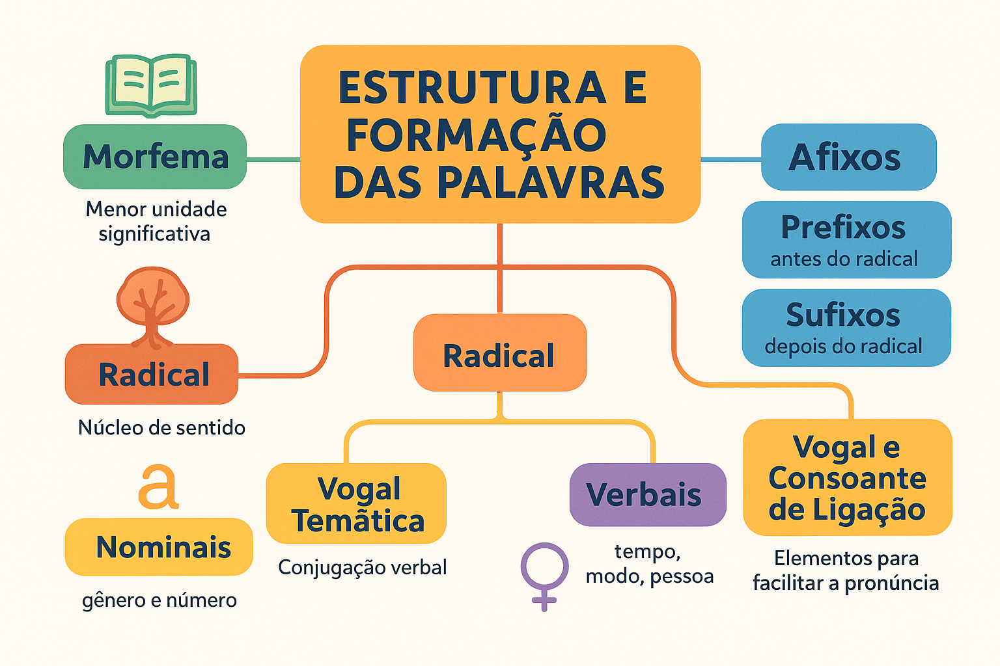

Estrutura e Formação das Palavras: morfemas, radical, afixos e desinências
As palavras de uma língua não são blocos acústicos ou gráficos indivisíveis. Longe de constituírem unidades isoladas e impenetráveis, elas funcionam como estruturas arquitetadas com rigor a partir de elementos menores dotados de forma e significado: os morfemas. Compreender a anatomia interna dos vocábulos é indispensável para desvendar as engrenagens da Língua Portuguesa, dominando com segurança a ortografia, as famílias de palavras, a flexão verbal e nominal e as infinitas possibilidades de ampliação do léxico.
A investigação da estrutura das palavras analisa como as unidades mórficas se organizam em torno de um núcleo semântico básico, recebem modificadores de sentido e agregam marcas obrigatórias de concordância e tempo. Na esteira dos estudos inaugurados por Joaquim Mattoso Câmara Jr., o estudo dos elementos mórficos supera a simples memorização de regras gramaticais e passa a revelar a lógica interna com que o idioma opera para expressar o pensamento humano.
Neste artigo completo, você explorará a definição científica de morfema, as distinções fundamentais entre raiz e radical, o papel derivacional dos afixos (prefixos e sufixos), a função estrutural da vogal temática e do tema, o mecanismo das desinências nominais e verbais, além do funcionamento dos elementos mórficos de transição e ligação.

O que são morfemas? A anatomia mínima da palavra
O morfema é a menor unidade linguística portadora de significado ou de função gramatical. Ao contrário do fonema — que atua exclusivamente no plano sonoro para distinguir vocábulos (unidade distintiva) —, o morfema opera simultaneamente nos planos da expressão e do conteúdo (unidade significativa).
Um único vocábulo pode concentrar múltiplos morfemas coordenados entre si. Analisemos, por exemplo, a estrutura do vocábulo menininhas:
Decomposição mórfica do vocábulo menininhas
- menin- : radical (núcleo lexical que remete ao conceito de criança);
- -inh- : afixo/sufixo diminutivo (agrega o valor semântico de pequenez ou afetividade);
- -a : desinência nominal de gênero feminino (opõe-se ao masculino menino);
- -s : desinência nominal de número plural (indica multiplicidade de seres).
A definição de morfema na linguística contemporânea
“O morfema é a unidade mínima da primeira articulação da linguagem, isto é, a menor porção fonicamente configurada à qual se associa de modo indissolúvel uma significação léxica ou gramatical” (MATTOSO CÂMARA JR., 2008, p. 71).
Classificação dos elementos mórficos na Língua Portuguesa
Os constituintes mórficos dividem-se em duas categorias primordiais: os morfemas lexicais (que veiculam os conceitos do mundo exterior e formam séries abertas) e os morfemas gramaticais (que expressam relações estruturais e operam em inventários fechados). Na gramática descritiva, eles agrupam-se em:
1. Radical: o núcleo semântico lexical
O radical é a matriz irredutível da palavra, responsável por abrigar sua carga semântica básica. É o morfema comum a uma série de palavras da mesma família etimológica (palavras cognatas):
- pedr-: pedra, pedreiro, pedregulho, apedrejar, pedraria;
- cant-: cantar, cantoria, cantor, cantante, canto;
- livr-: livro, livreiro, livraria, livreto.
Raiz vs. Radical: uma distinção histórica importante
Enquanto a raiz é um conceito diacrônico e etimológico que remete à forma mais remota da palavra no latim ou no grego (frequentemente inacessível sem estudo filológico), o radical é a forma viva e sincrônica apreendida na estrutura atual do português após a retirada das desinências e afixos secundários.
2. Afixos: prefixos e sufixos
Os afixos são morfemas derivacionais secundários que se acoplam ao radical para produzir palavras derivadas, modificando o sentido primitivo ou convertendo a classe morfológica:
Prefixos
Posicionam-se antes do radical. Na Língua Portuguesa, os prefixos geralmente alteram o campo semântico da palavra sem modificar sua classe gramatical originária.
Exemplos:
• in- + feliz (adj.) = infeliz (adj.)
• re- + fazer (v.) = refazer (v.)
• des- + leal (adj.) = desleal (adj.)
Sufixos
Posicionam-se depois do radical. Frequentemente promovem a mudança de classe gramatical do vocábulo de origem e organizam paradigmas nominais, adjetivais ou verbais.
Exemplos:
• feliz (adj.) + -mente = felizmente (adv.)
• cantar (v.) + -or = cantor (subst.)
• leal (adj.) + -dade = lealdade (subst.)
3. Vogal temática e Tema
A vogal temática é o morfema responsável por conectar o radical às desinências, preparando a base morfológica da palavra para as variações flexivas. A fusão do radical com a vogal temática dá origem ao tema (Tema = Radical + Vogal Temática).
- Vogais temáticas verbais: indicam o paradigma conjugacional ao qual o verbo pertence na língua:
- -a- (1ª conjugação): cant-a-r, estud-a-r (tema: canta-, estuda-);
- -e- (2ª conjugação): vend-e-r, corr-e-r (tema: vende-, corre-);
- -i- (3ª conjugação): part-i-r, abr-i-r (tema: parti-, abri-).
- Vogais temáticas nominais: vogais átonas finais (-a, -e, -o) presentes em substantivos e adjetivos que não marcam oposição direta de sexo/gênero masculino vs. feminino:
- Em mes-a, trib-o, dour-o e pon-te, as terminações não se opõem a um sexo alternativo; atuam como vogais temáticas integradas ao tema nominal.
4. Desinências: as marcas de flexão gramatical
As desinências são morfemas flexionais que se localizam na terminação da palavra para manifestar as categorias sintáticas exigidas pela concordância na oração:
- Desinências Nominais:
- De gênero: opõem o masculino ao feminino (ex.: alun-o / alun-a; gat-o / gat-a);
- De número: opõem o singular ao plural mediante o morfema -s (ex.: aluno / aluno-s; aluna / aluna-s).
- Desinências Verbais:
- Modo-temporais (DMT): sinalizam o tempo histórico e a atitude da enunciação (ex.: cant-á-va-mos → o sufixo -va- indica o pretérito imperfeito do indicativo);
- Número-pessoais (DNP): indicam a pessoa do discurso e o número gramatical (ex.: cant-á-va-mos → -mos indica a 1ª pessoa do plural).
5. Vogais e consoantes de ligação (Morfemas de eufonia)
Diferentemente dos afixos e desinências, as vogais e consoantes de ligação não possuem significação intrínseca (semântica ou gramatical). Sua função no vocábulo é estritamente fonético-articulatória (eufônica): inserem-se entre dois morfemas para evitar encontros sonoros dissonantes ou difíceis de pronunciar.
- Vogal de ligação: presente na união de compostos ou bases eruditas, como a vogal -i- em carn-i-voro e a vogal -o- em gas-ô-metro (radical gás + vogal de ligação -o- + sufixo grego -metro);
- Consoante de ligação: indispensável para a viabilidade fonética de certas derivações, como a consoante -z- em cafe-z-al (radical café + consoante de ligação -z- + sufixo coletivo -al) e em chá-z-eira.
Quadro comparativo dos elementos mórficos
A tabela a seguir sistematiza as características fundamentais de cada elemento da estrutura vocabular:
| Elemento Mórfico | Natureza do Morfema | Função Principal | Exemplo Típico |
|---|---|---|---|
| Radical | Lexical | Abriga a base e o sentido conceitual primário do vocábulo. | am-ar, amor-oso |
| Prefixo | Derivacional | Antepõe-se ao radical para modificar o sentido original. | des-lealdade |
| Sufixo | Derivacional | Posiciona-se após o radical, frequentemente alterando a classe. | atual-ização |
| Vogal Temática | Estrutural | Liga o radical às desinências e constitui o tema da palavra. | estud-a-r, ros-a |
| Desinência Nominal | Flexional | Indica flexões gramaticais de gênero (m/f) e de número (s/p). | menin-a-s |
| Desinência Verbal | Flexional | Indica tempo, modo, número e pessoa nas formas verbais. | parti-ria-mos |
| Vogal/Consoante de Ligação | Fonético-Eufônico | Evita atritos articulatórios entre morfemas sem alterar o sentido. | cafe-z-al, gas-ô-metro |
Exemplo prático de segmentação estrutural completa
Análise detalhada de vocábulos na prática
Observe a dissecação morfológica completa de duas palavras representativas da riqueza mórfica da língua:
1. Inquebrantáveis:
• in- : prefixo latino de valor semântico negativo (não);
• -quebr- : radical verbal portador do sentido primitivo de fracionamento;
• -a- : vogal temática verbal (assinala a 1ª conjugação do verbo primitivo quebrar);
• -nt- : elemento mórfico participial/adjetivador derivacional;
• -vel : sufixo formador de adjetivo de possibilidade (que sob o plural assimila-se a -vei-);
• -s : desinência nominal de número plural.
2. Reorganizávamos:
• re- : prefixo indicativo de reiteração ou repetição;
• -organ- : radical associado à ideia de ordem e instrumento;
• -iz- : sufixo verbalizador;
• -a- : vogal temática da 1ª conjugação verbal (tema: reorganiza-);
• -va- : desinência modo-temporal (pretérito imperfeito do indicativo);
• -mos : desinência número-pessoal (1ª pessoa do plural).
Questões para estudo e reflexão
Questão 1
Por que o "a" final em menina é uma desinência de gênero, enquanto em mesa o "a" atua como vogal temática nominal?
Ver resposta comentada
Resposta comentada: Em menina, a vogal -a opõe-se diretamente à terminação -o de menino no sistema flexivo da língua, marcando a distinção gramatical de gênero (masculino vs. feminino). Em mesa, não existe a contraparte masculina (*meso); a terminação -a integra o tema nominal da palavra e serve de apoio mórfico, sem constituir flexão de sexo ou gênero.
Questão 2
Qual é a função do tema morfológico na conjugação dos verbos regulares em português?
Ver resposta comentada
Resposta comentada: O tema resulta da união do radical com a vogal temática. Sua função é adequar a base do verbo para o recebimento das desinências de tempo, modo e pessoa, evitando encontros fonéticos impróprios diretamente sobre o radical e indicando a que paradigma de conjugação o verbo pertence.
Questão 3
O elemento "-z-" em chaleira possui valor semântico de sentido ou significado gramatical? Explique.
Ver resposta comentada
Resposta comentada: Não. O elemento -z- é uma consoante de ligação (morfema eufônico). Sua presença decorre unicamente de exigências fonéticas, servindo para ligar o radical chá ao sufixo -eira sem gerar hiatos incômodos ou dificuldades de pronúncia. Não possui carga semântica nem expressa categorias gramaticais.
Questão 4
Como se diferenciam as desinências modo-temporais (DMT) das desinências número-pessoais (DNP)?
Ver resposta comentada
Resposta comentada: A DMT situa a ação verbal no tempo (presente, pretérito, futuro) e expressa o modo da atitude do locutor (indicativo, subjuntivo, imperativo). A DNP indica qual pessoa gramatical do discurso pratica a ação (1ª, 2ª ou 3ª pessoa) e a sua quantidade (singular ou plural).
Questão 5
O que caracteriza um grupo de palavras cognatas do ponto de vista morfológico?
Ver resposta comentada
Resposta comentada: Palavras cognatas são vocábulos que compartilham o mesmo radical genético e histórico, apresentando uma raiz comum de significação (por exemplo: noite, anoitecer, noitada e noturno).
Resumo da Estrutura das Palavras
- Os morfemas são as unidades mínimas dotadas de significado que compõem as palavras;
- O radical é o núcleo invariável portador do significado fundamental comum às famílias cognatas;
- Os afixos dividem-se em prefixos (antepostos) e sufixos (pospostos ao radical);
- A vogal temática une-se ao radical para compor o tema e definir o paradigma da palavra;
- As desinências expressam flexões obrigatórias: gênero e número nos nomes; tempo, modo e pessoa nos verbos;
- Vogais e consoantes de ligação atuam como elementos eufônicos sem significado intrínseco.
Perguntas frequentes sobre a estrutura das palavras
O que é um morfema zero?
É a ausência formal de um morfema explícito que, pelo contraste no sistema da língua, adquire valor funcional significativo. Por exemplo, no singular da palavra livro, a ausência de desinência de número (morfema zero de plural) sinaliza gramaticalmente que a palavra está no singular.
Todas as palavras da língua portuguesa possuem vogal temática?
Não. Existem formas chamadas atemáticas, em que as desinências se ligam diretamente ao radical sem a presença da vogal temática intermediária, como ocorre na primeira pessoa do presente do indicativo de certos verbos (ex.: cant-o, part-o) e em substantivos terminados por consoante (ex.: mar, flor).
Qual a diferença entre alomorfe e morfema?
O morfema é a unidade funcional abstrata, enquanto os alomorfes são as diferentes variantes fonéticas ou gráficas que esse mesmo morfema pode assumir em contextos específicos (por exemplo, o radical do verbo fazer varia entre faz-, fiz- e faç-).
Como identificar com rapidez o radical de uma palavra?
O método mais seguro consiste em agrupar palavras da mesma família (cognatas) e observar o segmento formal idêntico que se repete em todas elas (ex.: terra, terrestre, aterrar → radical comum: terr-).
Afixos alteram necessariamente a classe gramatical?
Os prefixos raramente alteram a classe gramatical da base no português (ex.: ver [verbo] → prever [verbo]). Já os sufixos provocam frequentemente essa mudança categorial (ex.: atual [adjetivo] → atualizar [verbo]).
Por que é importante reconhecer os morfemas para a ortografia?
Porque o reconhecimento dos morfemas impede dúvidas de grafia: palavras com sufixos cognatos mantêm a coerência morfológica (como pesquisa → pesquisar com 's', em contraste com aviso → avisar).
Considerações finais
A dissecação da estrutura dos vocábulos revela que a Língua Portuguesa não opera por acumulação caótica de palavras, mas mediante um sistema elegante de blocos combinatórios. Reconhecer o papel do radical, dos afixos, das desinências e das vogais de apoio liberta o falante da memorização mecânica, conferindo-lhe uma percepção analítica apurada sobre a forma e a função da linguagem.
Ao dominar a anatomia dos elementos constituintes das palavras, o leitor consolida o alicerce fundamental para explorar com profundidade os mecanismos seguintes: os processos de derivação e composição, que mobilizam esses mesmos morfemas para gerar novos termos e manter o idioma vivo e dinâmico.
Conteúdos relacionados
- Introdução à Morfologia: o estudo da forma das palavras
- Morfologia: Estrutura, Formação e Classes de Palavras — Índice Geral
- Processos de Formação de Palavras: derivação, composição e outros
- Prefixos e Sufixos de Intensidade e Diminuição
- Flexão das Palavras: gênero, número, grau, tempo, modo, pessoa e aspecto
- Morfologia Estrutural: a estrutura das palavras e o estudo dos morfemas
- Famílias Lexicais e Relações Morfológicas
Referências
- AZEREDO, José Carlos de. Gramática Houaiss da Língua Portuguesa. 4. ed. São Paulo: Parábola Editorial, 2021.
- BECHARA, Evanildo. Moderna Gramática Portuguesa. 39. ed. Rio de Janeiro: Nova Fronteira, 2019.
- CUNHA, Celso; CINTRA, Lindley. Nova Gramática do Português Contemporâneo. 5. ed. Rio de Janeiro: Lexikon, 2008.
- MATTOSO CÂMARA JR., Joaquim. Estrutura da Língua Portuguesa. 54. ed. Petrópolis: Vozes, 2008.
- MATTOSO CÂMARA JR., Joaquim. Problemas de Linguística Descritiva. 21. ed. Petrópolis: Vozes, 2004.
- ROCHA LIMA, Carlos Henrique da. Gramática Normativa da Língua Portuguesa. 46. ed. São Paulo: José Olympio, 2000.
Explore outros conteúdos
Continue seus estudos acessando outras seções do site Mestre Kira: